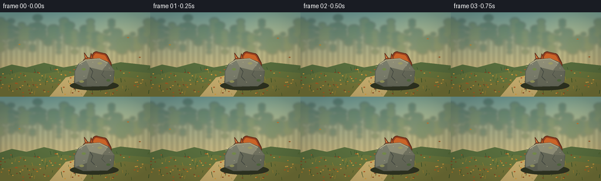
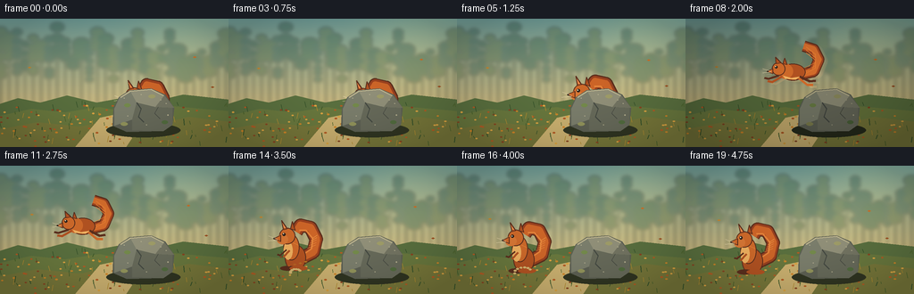
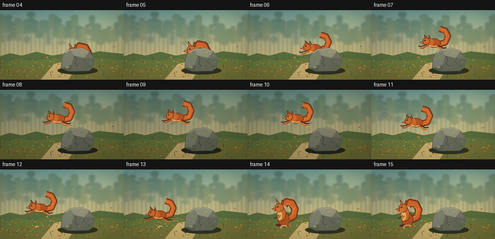

CODING AGENTS AS PIXEL WORLD MODELS
traex/GPT-5.6-Sol · dynamic_spatial_relationship_0023
点击播放 · 原生 RGB 像素
逐轮保存的候选
回放视频、检查图与代码变化。
每份候选均可单独播放。实际图片检查记录在下方工具轨迹中。
候选 01播放与检查图
点击播放 · 原生 RGB 像素


展开代码变化
--- 上一保存版本
+++ 本次保存版本
@@ -0,0 +1,227 @@
+from pathlib import Path
+import math, random
+import numpy as np
+from PIL import Image, ImageDraw, ImageFilter
+import artifact_io
+
+W,H,N,S = 256,144,20,3
+random.seed(2302)
+
+def sc(v): return int(round(v*S))
+def box(b): return tuple(sc(v) for v in b)
+def pts(p): return [(sc(x),sc(y)) for x,y in p]
+
+def ellipse(d,b,fill,outline=None,width=1): d.ellipse(box(b),fill=fill,outline=outline,width=sc(width) if outline else 1)
+def polygon(d,p,fill,outline=None): d.polygon(pts(p),fill=fill); outline and d.line(pts(p+[p[0]]),fill=outline,width=sc(1),joint='curve')
+def line(d,p,fill,width=1): d.line(pts(p),fill=fill,width=sc(width),joint='curve')
+
+def background(frame):
+ # Painterly dawn gradient.
+ yy=np.arange(H*S)[:,None]
+ top=np.array([112,158,153.],float); bot=np.array([226,197,130.],float)
+ t=np.minimum(1,yy/(H*S*.78))[:,:,None]
+ arr=np.tile((top*(1-t)+bot*t),(1,W*S,1))
+ # Warm light at upper right.
+ X,Y=np.meshgrid(np.arange(W*S),np.arange(H*S))
+ glow=np.exp(-((X-sc(213))**2+(Y-sc(27))**2)/(2*(sc(44)**2)))[:,:,None]
+ arr=np.clip(arr+glow*np.array([25,19,5]),0,255).astype('uint8')
+ im=Image.fromarray(arr,'RGB')
+ # distant forest on softened overlay
+ bg=Image.new('RGBA',im.size,(0,0,0,0)); d=ImageDraw.Draw(bg)
+ rng=random.Random(902)
+ for x in range(-8,270,9):
+ h=rng.randint(31,67); wid=rng.randint(5,10)
+ col=rng.choice([(48,86,70,105),(61,99,73,110),(83,106,67,100),(39,79,69,90)])
+ d.rectangle((sc(x-wid/5),sc(75-h),sc(x+wid/5),sc(105)),fill=(61,69,53,70))
+ for j in range(rng.randint(3,6)):
+ cy=78-h+j*h/7+rng.uniform(-3,3)
+ d.ellipse(box((x-wid,cy-wid*.65,x+wid,cy+wid*.65)),fill=col)
+ bg=bg.filter(ImageFilter.GaussianBlur(sc(2.1)))
+ im=Image.alpha_composite(im.convert('RGBA'),bg)
+ # mid-ground and ground
+ g=Image.new('RGBA',im.size,(0,0,0,0)); d=ImageDraw.Draw(g)
+ polygon(d,[(-5,97),(20,89),(45,94),(75,86),(108,94),(141,88),(171,93),(205,85),(260,91),(260,145),(-5,145)],(90,112,63,255))
+ # meadow bands
+ polygon(d,[(-5,110),(35,101),(72,105),(111,99),(150,106),(193,98),(261,104),(261,145),(-5,145)],(105,120,62,255))
+ polygon(d,[(-5,125),(42,116),(90,121),(128,113),(175,119),(211,110),(261,116),(261,145),(-5,145)],(119,119,58,255))
+ # soft path/highlight
+ polygon(d,[(84,144),(112,111),(140,105),(165,108),(141,144)],(156,137,76,85))
+ im=Image.alpha_composite(im,g)
+ d=ImageDraw.Draw(im)
+ # Ground texture is fixed to make camera feel locked.
+ rng=random.Random(1701)
+ for _ in range(165):
+ x=rng.uniform(0,256); y=rng.uniform(96,143)
+ if rng.random()<.48:
+ c=rng.choice([(52,81,42,210),(65,91,42,220),(75,99,45,205),(177,139,49,210)])
+ line(d,[(x,y),(x+rng.uniform(-2,2),y-rng.uniform(2,7))],c,rng.choice([.5,.7,1]))
+ else:
+ c=rng.choice([(180,91,36,205),(206,132,40,210),(136,70,34,180),(220,164,66,190)])
+ ellipse(d,(x-1.4,y-.7,x+1.4,y+.7),c)
+ # drifting foreground leaves, restrained and frame coherent
+ for k,(sx,sy,col) in enumerate([(218,43,(210,112,38,210)),(33,53,(198,134,49,180)),(238,75,(159,82,35,180))]):
+ x=sx-0.65*frame*(1 if k!=1 else -.35)
+ y=sy+0.32*frame+2*math.sin(frame*.38+k)
+ polygon(d,[(x-2,y),(x,y-1),(x+2,y),(x,y+1)],col)
+ return im
+
+def draw_rock(im):
+ d=ImageDraw.Draw(im)
+ # cast shadow anchors the rock
+ ellipse(d,(119,117,202,133),(48,53,34,92))
+ # coarse outer silhouette and main planes
+ shape=[(126,120),(127,100),(133,88),(145,80),(169,78),(185,85),(195,100),(193,119),(183,126),(142,127)]
+ polygon(d,shape,(93,96,83,255))
+ polygon(d,[(128,101),(134,88),(146,81),(153,93),(148,113),(128,120)],(123,126,108,255))
+ polygon(d,[(146,81),(169,79),(184,86),(174,99),(153,94)],(145,144,121,255))
+ polygon(d,[(153,94),(174,99),(193,100),(193,119),(183,126),(148,125),(148,113)],(103,106,90,255))
+ polygon(d,[(184,86),(195,100),(174,99)],(115,116,98,255))
+ # sunlit rim
+ line(d,[(135,88),(146,81),(169,79),(183,86)],(190,181,143,220),1.2)
+ # fissures and lichen
+ line(d,[(153,94),(158,101),(155,110),(161,116)],(67,72,65,190),1)
+ line(d,[(177,99),(173,106),(179,112)],(71,74,66,170),.8)
+ for b,c in [((139,95,146,99),(116,139,76,145)),((166,85,174,89),(159,157,104,150)),((181,114,188,118),(82,108,63,145)),((135,116,143,120),(146,148,91,115))]:
+ ellipse(d,b,c)
+ # tiny grain points
+ for x,y in [(139,89),(158,85),(186,95),(164,119),(143,109),(180,91),(188,108)]:
+ ellipse(d,(x-.6,y-.5,x+.6,y+.5),(183,177,146,130))
+
+def draw_squirrel(im,x,y,pose='crouch',cycle=0,scale=1.0,blink=False):
+ """Draw an unmistakable red squirrel facing left. x/y is ground base or body center for leap."""
+ d=ImageDraw.Draw(im)
+ q=scale
+ def P(dx,dy): return (x+dx*q,y+dy*q)
+ def E(cx,cy,rx,ry,fill,outline=None,w=1):
+ ellipse(d,(x+(cx-rx)*q,y+(cy-ry)*q,x+(cx+rx)*q,y+(cy+ry)*q),fill,outline,w)
+ fur=(177,82,34,255); fur2=(205,105,42,255); light=(238,176,96,255); dark=(91,47,30,255); ink=(42,31,25,255)
+ if pose=='leap':
+ # sweeping tail is behind the body; curved outline made from layered strokes
+ tail=[P(8,3),P(25,-1),P(31,-15),P(25,-27),P(13,-31)]
+ line(d,tail,dark,14*q); line(d,tail,(159,68,31,255),11*q); line(d,tail,(211,108,43,255),7*q)
+ # tail's bright feathery outside
+ for off in [-3,1,4]:
+ line(d,[P(14,off-2),P(27,off-9),P(27,off-18),P(16,off-27)],(229,127,51,180),.8*q)
+ # elongated body
+ E(0,0,15,10,fur,dark)
+ E(-9,-1,9,9,fur2)
+ # cream underside
+ polygon(d,[P(-12,4),P(-2,7),P(9,5),P(3,9),P(-9,8)],light)
+ # head and pointed snout
+ E(-17,-4,8,8,fur2,dark)
+ polygon(d,[P(-24,-4),P(-31,-1),P(-24,2)],fur2,dark)
+ # ears swept by motion
+ polygon(d,[P(-20,-10),P(-21,-18),P(-14,-11)],fur,dark)
+ polygon(d,[P(-12,-10),P(-10,-17),P(-7,-9)],fur,dark)
+ # eye and glint
+ E(-20,-6,1.7,1.7,ink); E(-20.5,-6.6,.55,.55,(255,245,210,255))
+ E(-30,-1,.8,.7,ink)
+ # stretched front paws and rear legs
+ line(d,[P(-17,4),P(-29,8),P(-34,7)],dark,2.5*q)
+ line(d,[P(-13,5),P(-25,12),P(-30,11)],fur,3*q)
+ line(d,[P(8,5),P(20,11),P(27,10)],dark,3*q)
+ line(d,[P(7,7),P(17,15),P(24,15)],fur2,3*q)
+ # whiskers
+ line(d,[P(-26,-1),P(-36,-4)],(238,221,179,190),.45)
+ line(d,[P(-26,0),P(-36,1)],(238,221,179,180),.45)
+ else:
+ # large curled plume
+ tail=[P(8,-14),P(24,-22),P(28,-38),P(21,-52),P(8,-55),P(3,-47)]
+ line(d,tail,dark,17*q); line(d,tail,(154,65,31,255),14*q); line(d,tail,(205,101,40,255),9*q)
+ # tail highlights/fur filaments
+ line(d,[P(10,-18),P(22,-26),P(23,-39),P(15,-49),P(7,-49)],(230,132,58,210),2*q)
+ for j in range(5):
+ line(d,[P(17+j*1.5,-27-j*3),P(27+j*.5,-31-j*3)],(235,145,66,145),.7)
+ bob=math.sin(cycle)*.7
+ # powerful hindquarters and torso
+ E(2,-15+bob,13,16,fur,dark)
+ E(-3,-28+bob,10,16,fur2,dark)
+ # pale belly patch
+ E(-7,-24+bob,5.5,11,light)
+ # head, cheek, muzzle
+ E(-8,-42+bob,10,10,fur2,dark)
+ E(-14,-38+bob,7,6,(215,119,53,255))
+ polygon(d,[P(-16,-43+bob),P(-25,-39+bob),P(-16,-35+bob)],fur2,dark)
+ # alert ears
+ polygon(d,[P(-13,-50+bob),P(-15,-61+bob),P(-8,-51+bob)],fur,dark)
+ polygon(d,[P(-4,-51+bob),P(-2,-60+bob),P(2,-49+bob)],fur,dark)
+ polygon(d,[P(-12,-52+bob),P(-14,-58+bob),P(-10,-52+bob)],(238,143,78,255))
+ # eye, nose and whiskers
+ if blink:
+ line(d,[P(-13,-44+bob),P(-9,-44+bob)],ink,1)
+ else:
+ E(-12,-44+bob,1.9,1.9,ink); E(-12.6,-44.7,.6,.6,(255,250,220,255))
+ E(-24,-39+bob,1.1,.9,ink)
+ line(d,[P(-20,-38+bob),P(-31,-42+bob)],(242,223,183,180),.45)
+ line(d,[P(-20,-37+bob),P(-32,-36+bob)],(242,223,183,180),.45)
+ # tucked forepaws / landing paws
+ line(d,[P(-9,-25+bob),P(-17,-18+bob),P(-20,-19+bob)],dark,2.2*q)
+ line(d,[P(-5,-24+bob),P(-13,-16+bob)],fur,2.5*q)
+ E(-7,-2,10,3,dark)
+ E(6,-2,11,3,fur)
+ # fine fur accents
+ line(d,[P(-1,-34),P(5,-31)],(235,139,63,170),.8)
+
+def particles(im,frame):
+ d=ImageDraw.Draw(im)
+ # brief landing puff and kicked leaves
+ if 12 <= frame <= 17:
+ a=(frame-12)
+ fade=max(0,180-a*30)
+ for j in range(7):
+ ang=.7+j*.45
+ r=2+a*(1.4+j*.18)
+ x=76+math.cos(ang)*r; y=119-math.sin(ang)*r*.55
+ E=(x-1.6,y-1,x+1.6,y+1)
+ ellipse(d,E,(211,181,113,fade))
+ if frame<=15:
+ for j in range(4):
+ x=78+(j-2)*4+a*(j-1)*1.1; y=116-a*(2+j*.7)
+ polygon(d,[(x-2,y),(x,y-1),(x+2,y),(x,y+1)],(185,92+10*j,35,210-a*35))
+
+def make_frame(i):
+ im=background(i)
+ # squirrel/rock painter's order communicates starting occlusion explicitly
+ if i <= 4:
+ # mostly concealed: ears, head crown, and plume peek over the top
+ draw_squirrel(im,157,125,pose='crouch',cycle=i*.7,scale=.92,blink=(i==3))
+ draw_rock(im)
+ elif i==5:
+ # anticipation crouch: still behind rock, leaning toward the left edge
+ draw_squirrel(im,147,122,pose='crouch',cycle=3.5,scale=.94)
+ draw_rock(im)
+ elif 6 <= i <= 13:
+ u=(i-5)/8.0
+ x=148+(74-148)*u
+ y=94-37*math.sin(math.pi*u)
+ # at takeoff, rock still occludes the squirrel's rear half
+ if u < .28:
+ draw_squirrel(im,x,y,pose='leap',scale=.94)
+ draw_rock(im)
+ else:
+ draw_rock(im)
+ # tiny motion trail only on fastest middle frames
+ if 8 <= i <= 10:
+ ghost=Image.new('RGBA',im.size,(0,0,0,0)); draw_squirrel(ghost,x+4,y+2,pose='leap',scale=.94)
+ ghost.putalpha(35); im=Image.alpha_composite(im,ghost)
+ draw_squirrel(im,x,y,pose='leap',scale=.94)
+ else:
+ draw_rock(im)
+ # settle into an alert pose unmistakably to the rock's left
+ settle=max(0,(17-i)*1.4)
+ draw_squirrel(im,73,121-settle,pose='crouch',cycle=i*.65,scale=.91,blink=(i==18))
+ particles(im,i)
+ # subtle cinematic vignette
+ arr=np.asarray(im.convert('RGB')).astype(np.float32)
+ yy,xx=np.mgrid[0:H*S,0:W*S]
+ dx=(xx-W*S/2)/(W*S/2); dy=(yy-H*S/2)/(H*S/2)
+ vig=np.clip(1-.12*(dx*dx+dy*dy),.82,1)[...,None]
+ arr=np.clip(arr*vig,0,255).astype(np.uint8)
+ return np.asarray(Image.fromarray(arr).resize((W,H),Image.Resampling.LANCZOS).convert('RGB'))
+
+def main():
+ frames=np.stack([make_frame(i) for i in range(N)]).astype(np.uint8)
+ artifact_io.save(frames,Path(__file__).resolve().parent)
+
+if __name__=='__main__':
+ main()
可观测工具轨迹
实际执行的命令与返回图片。
命令 1exit 0
/bin/bash -lc "cat prompt.txt && printf '\\n--- RULES ---\\n' && cat GENERATION_RULES.md && printf '\\n--- SPEC ---\\n' && cat task_spec.json"
命令 2exit 0
/bin/bash -lc "find . -maxdepth 2 -type f -printf '%p\\n' | sort && printf '\\n--- bins ---\\n' && command -v ffmpeg || true && command -v python3 || true"
命令 3exit 0
/bin/bash -lc 'cat artifact_io.py'
命令 4exit 0
/bin/bash -lc "cat > generate.py <<'PY'
from pathlib import Path
import math, random
import numpy as np
from PIL import Image, ImageDraw, ImageFilter
import artifact_io
W,H,N,S = 256,144,20,3
random.seed(2302)
def sc(v): return int(round(v*S))
def box(b): return tuple(sc(v) for v in b)
def pts(p): return [(sc(x),sc(y)) for x,y in p]
def ellipse(d,b,fill,outline=None,width=1): d.ellipse(box(b),fill=fill,outline=outline,width=sc(width) if outline else 1)
def polygon(d,p,fill,outline=None): d.polygon(pts(p),fill=fill); outline and d.line(pts(p+[p[0]]),fill=outline,width=sc(1),joint='curve')
def line(d,p,fill,width=1): d.line(pts(p),fill=fill,width=sc(width),joint='curve')
def background(frame):
# Painterly dawn gradient.
yy=np.arange(H*S)[:,None]
top=np.array([112,158,153.],float); bot=np.array([226,197,130.],float)
t=np.minimum(1,yy/(H*S*.78))[:,:,None]
arr=np.tile((top*(1-t)+bot*t),(1,W*S,1))
# Warm light at upper right.
X,Y=np.meshgrid(np.arange(W*S),np.arange(H*S))
glow=np.exp(-((X-sc(213))**2+(Y-sc(27))**2)/(2*(sc(44)**2)))[:,:,None]
arr=np.clip(arr+glow*np.array([25,19,5]),0,255).astype('uint8')
im=Image.fromarray(arr,'RGB')
# distant forest on softened overlay
bg=Image.new('RGBA',im.size,(0,0,0,0)); d=ImageDraw.Draw(bg)
rng=random.Random(902)
for x in range(-8,270,9):
h=rng.randint(31,67); wid=rng.randint(5,10)
col=rng.choice([(48,86,70,105),(61,99,73,110),(83,106,67,100),(39,79,69,90)])
d.rectangle((sc(x-wid/5),sc(75-h),sc(x+wid/5),sc(105)),fill=(61,69,53,70))
for j in range(rng.randint(3,6)):
cy=78-h+j*h/7+rng.uniform(-3,3)
d.ellipse(box((x-wid,cy-wid*.65,x+wid,cy+wid*.65)),fill=col)
bg=bg.filter(ImageFilter.GaussianBlur(sc(2.1)))
im=Image.alpha_composite(im.convert('RGBA'),bg)
# mid-ground and ground
g=Image.new('RGBA',im.size,(0,0,0,0)); d=ImageDraw.Draw(g)
polygon(d,[(-5,97),(20,89),(45,94),(75,86),(108,94),(141,88),(171,93),(205,85),(260,91),(260,145),(-5,145)],(90,112,63,255))
# meadow bands
polygon(d,[(-5,110),(35,101),(72,105),(111,99),(150,106),(193,98),(261,104),(261,145),(-5,145)],(105,120,62,255))
polygon(d,[(-5,125),(42,116),(90,121),(128,113),(175,119),(211,110),(261,116),(261,145),(-5,145)],(119,119,58,255))
# soft path/highlight
polygon(d,[(84,144),(112,111),(140,105),(165,108),(141,144)],(156,137,76,85))
im=Image.alpha_composite(im,g)
d=ImageDraw.Draw(im)
# Ground texture is fixed to make camera feel locked.
rng=random.Random(1701)
for _ in range(165):
x=rng.uniform(0,256); y=rng.uniform(96,143)
if rng.random()<.48:
c=rng.choice([(52,81,42,210),(65,91,42,220),(75,99,45,205),(177,139,49,210)])
line(d,[(x,y),(x+rng.uniform(-2,2),y-rng.uniform(2,7))],c,rng.choice([.5,.7,1]))
else:
c=rng.choice([(180,91,36,205),(206,132,40,210),(136,70,34,180),(220,164,66,190)])
ellipse(d,(x-1.4,y-.7,x+1.4,y+.7),c)
# drifting foreground leaves, restrained and frame coherent
for k,(sx,sy,col) in enumerate([(218,43,(210,112,38,210)),(33,53,(198,134,49,180)),(238,75,(159,82,35,180))]):
x=sx-0.65*frame*(1 if k"'!=1 else -.35)
y=sy+0.32*frame+2*math.sin(frame*.38+k)
polygon(d,[(x-2,y),(x,y-1),(x+2,y),(x,y+1)],col)
return im
def draw_rock(im):
d=ImageDraw.Draw(im)
# cast shadow anchors the rock
ellipse(d,(119,117,202,133),(48,53,34,92))
# coarse outer silhouette and main planes
shape=[(126,120),(127,100),(133,88),(145,80),(169,78),(185,85),(195,100),(193,119),(183,126),(142,127)]
polygon(d,shape,(93,96,83,255))
polygon(d,[(128,101),(134,88),(146,81),(153,93),(148,113),(128,120)],(123,126,108,255))
polygon(d,[(146,81),(169,79),(184,86),(174,99),(153,94)],(145,144,121,255))
polygon(d,[(153,94),(174,99),(193,100),(193,119),(183,126),(148,125),(148,113)],(103,106,90,255))
polygon(d,[(184,86),(195,100),(174,99)],(115,116,98,255))
# sunlit rim
line(d,[(135,88),(146,81),(169,79),(183,86)],(190,181,143,220),1.2)
# fissures and lichen
line(d,[(153,94),(158,101),(155,110),(161,116)],(67,72,65,190),1)
line(d,[(177,99),(173,106),(179,112)],(71,74,66,170),.8)
for b,c in [((139,95,146,99),(116,139,76,145)),((166,85,174,89),(159,157,104,150)),((181,114,188,118),(82,108,63,145)),((135,116,143,120),(146,148,91,115))]:
ellipse(d,b,c)
# tiny grain points
for x,y in [(139,89),(158,85),(186,95),(164,119),(143,109),(180,91),(188,108)]:
ellipse(d,(x-.6,y-.5,x+.6,y+.5),(183,177,146,130))
def draw_squirrel(im,x,y,pose='"'crouch',cycle=0,scale=1.0,blink=False):
\"\"\"Draw an unmistakable red squirrel facing left. x/y is ground base or body center for leap.\"\"\"
d=ImageDraw.Draw(im)
q=scale
def P(dx,dy): return (x+dx*q,y+dy*q)
def E(cx,cy,rx,ry,fill,outline=None,w=1):
ellipse(d,(x+(cx-rx)*q,y+(cy-ry)*q,x+(cx+rx)*q,y+(cy+ry)*q),fill,outline,w)
fur=(177,82,34,255); fur2=(205,105,42,255); light=(238,176,96,255); dark=(91,47,30,255); ink=(42,31,25,255)
if pose=='leap':
# sweeping tail is behind the body; curved outline made from layered strokes
tail=[P(8,3),P(25,-1),P(31,-15),P(25,-27),P(13,-31)]
line(d,tail,dark,14*q); line(d,tail,(159,68,31,255),11*q); line(d,tail,(211,108,43,255),7*q)
# tail's bright feathery outside
for off in [-3,1,4]:
line(d,[P(14,off-2),P(27,off-9),P(27,off-18),P(16,off-27)],(229,127,51,180),.8*q)
# elongated body
E(0,0,15,10,fur,dark)
E(-9,-1,9,9,fur2)
# cream underside
polygon(d,[P(-12,4),P(-2,7),P(9,5),P(3,9),P(-9,8)],light)
# head and pointed snout
E(-17,-4,8,8,fur2,dark)
polygon(d,[P(-24,-4),P(-31,-1),P(-24,2)],fur2,dark)
# ears swept by motion
polygon(d,[P(-20,-10),P(-21,-18),P(-14,-11)],fur,dark)
polygon(d,[P(-12,-10),P(-10,-17),P(-7,-9)],fur,dark)
# eye and glint
E(-20,-6,1.7,1.7,ink); E(-20.5,-6.6,.55,.55,(255,245,210,255))
E(-30,-1,.8,.7,ink)
# stretched front paws and rear legs
line(d,[P(-17,4),P(-29,8),P(-34,7)],dark,2.5*q)
line(d,[P(-13,5),P(-25,12),P(-30,11)],fur,3*q)
line(d,[P(8,5),P(20,11),P(27,10)],dark,3*q)
line(d,[P(7,7),P(17,15),P(24,15)],fur2,3*q)
# whiskers
line(d,[P(-26,-1),P(-36,-4)],(238,221,179,190),.45)
line(d,[P(-26,0),P(-36,1)],(238,221,179,180),.45)
else:
# large curled plume
tail=[P(8,-14),P(24,-22),P(28,-38),P(21,-52),P(8,-55),P(3,-47)]
line(d,tail,dark,17*q); line(d,tail,(154,65,31,255),14*q); line(d,tail,(205,101,40,255),9*q)
# tail highlights/fur filaments
line(d,[P(10,-18),P(22,-26),P(23,-39),P(15,-49),P(7,-49)],(230,132,58,210),2*q)
for j in range(5):
line(d,[P(17+j*1.5,-27-j*3),P(27+j*.5,-31-j*3)],(235,145,66,145),.7)
bob=math.sin(cycle)*.7
# powerful hindquarters and torso
E(2,-15+bob,13,16,fur,dark)
E(-3,-28+bob,10,16,fur2,dark)
# pale belly patch
E(-7,-24+bob,5.5,11,light)
# head, cheek, muzzle
E(-8,-42+bob,10,10,fur2,dark)
E(-14,-38+bob,7,6,(215,119,53,255))
polygon(d,[P(-16,-43+bob),P(-25,-39+bob),P(-16,-35+bob)],fur2,dark)
# alert ears
polygon(d,[P(-13,-50+bob),P(-15,-61+bob),P(-8,-51+bob)],fur,dark)
polygon(d,[P(-4,-51+bob),P(-2,-60+bob),P(2,-49+bob)],fur,dark)
polygon(d,[P(-12,-52+bob),P(-14,-58+bob),P(-10,-52+bob)],(238,143,78,255))
# eye, nose and whiskers
if blink:
line(d,[P(-13,-44+bob),P(-9,-44+bob)],ink,1)
else:
E(-12,-44+bob,1.9,1.9,ink); E(-12.6,-44.7,.6,.6,(255,250,220,255))
E(-24,-39+bob,1.1,.9,ink)
line(d,[P(-20,-38+bob),P(-31,-42+bob)],(242,223,183,180),.45)
line(d,[P(-20,-37+bob),P(-32,-36+bob)],(242,223,183,180),.45)
# tucked forepaws / landing paws
line(d,[P(-9,-25+bob),P(-17,-18+bob),P(-20,-19+bob)],dark,2.2*q)
line(d,[P(-5,-24+bob),P(-13,-16+bob)],fur,2.5*q)
E(-7,-2,10,3,dark)
E(6,-2,11,3,fur)
# fine fur accents
line(d,[P(-1,-34),P(5,-31)],(235,139,63,170),.8)
def particles(im,frame):
d=ImageDraw.Draw(im)
# brief landing puff and kicked leaves
if 12 <= frame <= 17:
a=(frame-12)
fade=max(0,180-a*30)
for j in range(7):
ang=.7+j*.45
r=2+a*(1.4+j*.18)
x=76+math.cos(ang)*r; y=119-math.sin(ang)*r*.55
E=(x-1.6,y-1,x+1.6,y+1)
ellipse(d,E,(211,181,113,fade))
if frame<=15:
for j in range(4):
x=78+(j-2)*4+a*(j-1)*1.1; y=116-a*(2+j*.7)
polygon(d,[(x-2,y),(x,y-1),(x+2,y),(x,y+1)],(185,92+10*j,35,210-a*35))
def make_frame(i):
im=background(i)
# squirrel/rock painter's order communicates starting occlusion explicitly
if i <= 4:
# mostly concealed: ears, head crown, and plume peek over the top
draw_squirrel(im,157,125,pose='crouch',cycle=i*.7,scale=.92,blink=(i==3))
draw_rock(im)
elif i==5:
# anticipation crouch: still behind rock, leaning toward the left edge
draw_squirrel(im,147,122,pose='crouch',cycle=3.5,scale=.94)
draw_rock(im)
elif 6 <= i <= 13:
u=(i-5)/8.0
x=148+(74-148)*u
y=94-37*math.sin(math.pi*u)
# at takeoff, rock still occludes the squirrel's rear half
if u < .28:
draw_squirrel(im,x,y,pose='leap',scale=.94)
draw_rock(im)
else:
draw_rock(im)
# tiny motion trail only on fastest middle frames
if 8 <= i <= 10:
ghost=Image.new('RGBA',im.size,(0,0,0,0)); draw_squirrel(ghost,x+4,y+2,pose='leap',scale=.94)
ghost.putalpha(35); im=Image.alpha_composite(im,ghost)
draw_squirrel(im,x,y,pose='leap',scale=.94)
else:
draw_rock(im)
# settle into an alert pose unmistakably to the rock's left
settle=max(0,(17-i)*1.4)
draw_squirrel(im,73,121-settle,pose='crouch',cycle=i*.65,scale=.91,blink=(i==18))
particles(im,i)
# subtle cinematic vignette
arr=np.asarray(im.convert('RGB')).astype(np.float32)
yy,xx=np.mgrid[0:H*S,0:W*S]
dx=(xx-W*S/2)/(W*S/2); dy=(yy-H*S/2)/(H*S/2)
vig=np.clip(1-.12*(dx*dx+dy*dy),.82,1)[...,None]
arr=np.clip(arr*vig,0,255).astype(np.uint8)
return np.asarray(Image.fromarray(arr).resize((W,H),Image.Resampling.LANCZOS).convert('RGB'))
def main():
frames=np.stack([make_frame(i) for i in range(N)]).astype(np.uint8)
artifact_io.save(frames,Path(__file__).resolve().parent)
if __name__=='__main__':
main()
PY
python3 generate.py
python3 - <<'PY'
import numpy as np
from PIL import Image
z=np.load('pixels.npz')['pixels']
print(z.shape,z.dtype,hex(int(z.min())),hex(int(z.max())))
print(Image.open('inspection.png').size)
PY"命令 5exit 0
/bin/bash -lc "python3 - <<'PY'
from PIL import Image,ImageDraw
ids=[4,5,6,7,8,9,10,11,12,13,14,15]
out=Image.new('RGB',(256*4,165*3),(20,20,20)); d=ImageDraw.Draw(out)
for j,i in enumerate(ids):
x=j%4*256;y=j//4*165
out.paste(Image.open(f'frames/{i:02}.png'),(x,y+21)); d.text((x+5,y+4),f'frame {i:02}',fill='white')
out.save('motion_check.png')
PY"视觉工具实际返回图片 1

视觉工具实际返回图片 2

保存候选 1 份；完成命令 5 次；可验证图片返回 2 张。原始 API 响应与完整日志保留在本地。